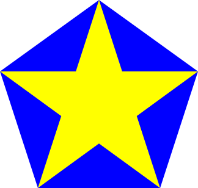
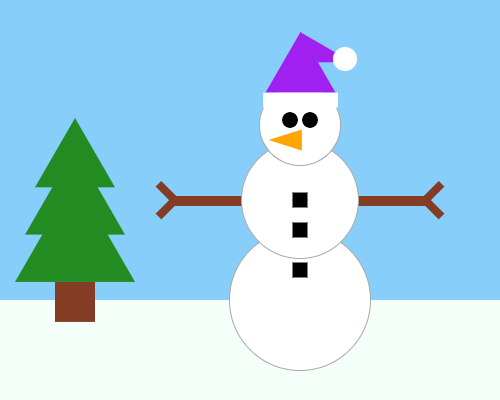

Hour of Code
Looking for a gentle, self-paced introduction to Bootstrap? Try the Hours of Code below. No prior programming experience required!
Intro to Graphics

{kind=link}
Build a Snowman!

{kind=link}
Hour of Data
🖼Show image This Hour of Data lesson is a self-guided Desmos activity. Students explore data visualization, introductory programming using The Pyret Programming Language, and the application of Data Science to solve real problems. Students will investigate a data set of vehicle-wildlife collisions in Vermont and make recommendations about where to build wildlife overpasses.
{kind=link}
These materials were developed partly through support of the National Science Foundation,
(awards 1042210, 1535276, 1648684, and 1738598).  Bootstrap by the Bootstrap Community is licensed under a Creative Commons 4.0 Unported License. This license does not grant permission to run training or professional development. Offering training or professional development with materials substantially derived from Bootstrap must be approved in writing by a Bootstrap Director. Permissions beyond the scope of this license, such as to run training, may be available by contacting contact@BootstrapWorld.org.
Bootstrap by the Bootstrap Community is licensed under a Creative Commons 4.0 Unported License. This license does not grant permission to run training or professional development. Offering training or professional development with materials substantially derived from Bootstrap must be approved in writing by a Bootstrap Director. Permissions beyond the scope of this license, such as to run training, may be available by contacting contact@BootstrapWorld.org.